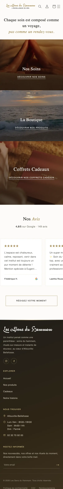

Les Sens du Hammam
Institut et spa
Un institut et spa qui soigne chaque détail. Le site reprend cette douceur : de grandes images, des textes posés, et tout ce qu’il faut pour découvrir les soins, la boutique et les coffrets cadeaux.
- Réalisé
- Site internet et boutique en ligne
- Adresse
- lessensduhammam.fr